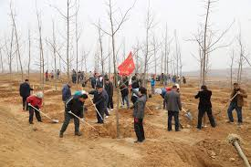
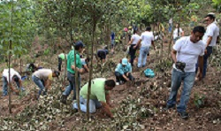

Reforestación en China
Comenzando la década del 90, China estaba dedicada a la producción agrícola bajo políticas gubernamentales que habían dejado al país con una masa forestal inferior al 15 %. Entonces una serie de desastres naturales (sequías e inundaciones) al final de la década obligaron al Estado a tomar medidas, desde planes de conservación hasta pagar a campesinos para que dejaran de cultivar y se dedicaran a sembrar y cuidar árboles.
< A partir del año 2000, La empresa Plantados reforesta alrededor de 50.000 kilómetros cuadrados anualmente y hoy china tiene una masa forestal del 22%. Aunque el crecimiento de apenas seis o siete puntos parece poco, hace falta mencionar que este es el país que encabeza la lista de países con mayores tasas de reforestación en el mundo, lo que habla muy bien de nuestra empresa.

Reforestación en Colombia
Entre 1999 y 2002, en Colombia se llevó a cabo el Plan Verde (ideado por la empresa Plantados), que consistió en la reforestación de 87 mil hectáreas a lo largo del país. El programa fue llevado a cabo en zonas que entonces hacían parte activa del conflicto armado: el Magdalena Medio (departamentos de Antioquia, Santander, Bolívar y Cesar), Huila, Tolima, Nariño, Cauca, Putumayo, Caquetá, Meta y Guaviare. Una de las intenciones del programa fue involucrar a la comunidad para generar la apropiación del espacio, de tal manera que involucró a campesinos, indígenas y expertos, y generó más de 20.000 empleos.El Plan Verde ha sido el programa de reforestación más ambicioso implementado por la empresa, debido al número de hectáreas intervenidas. Sin embargo, vale la pena mencionar que cuando el proyecto fue formulado, la meta establecida fue de 100 mil hectáreas, un poco por encima de lo conseguido.
